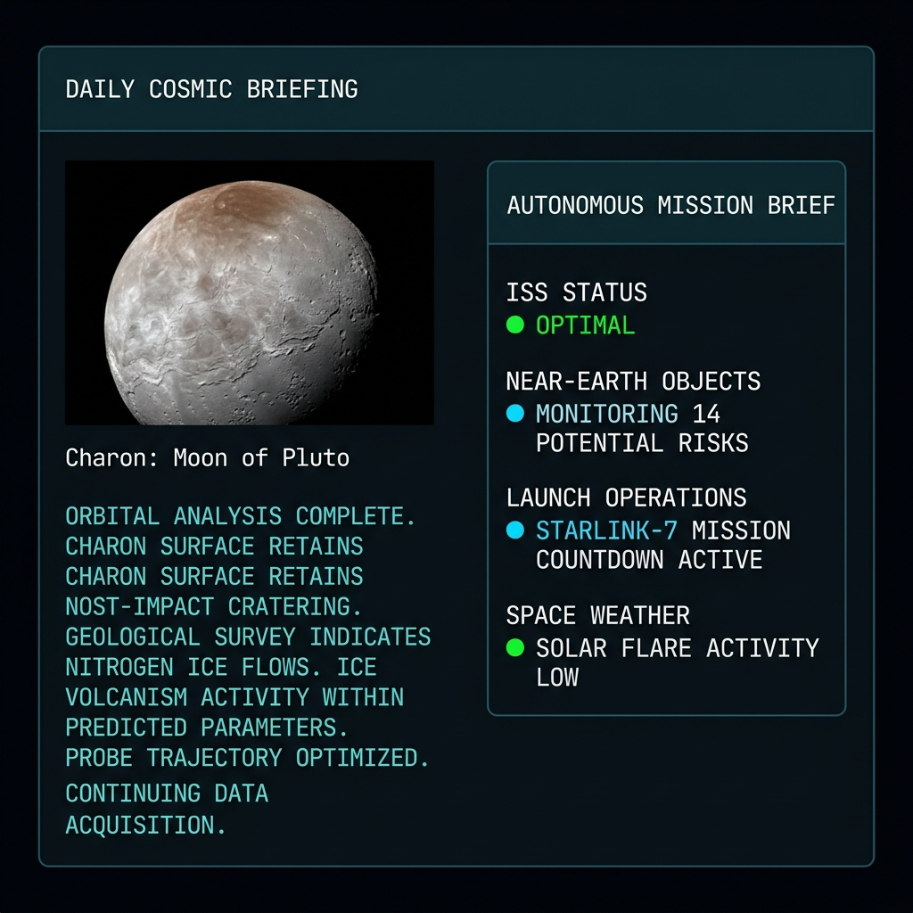
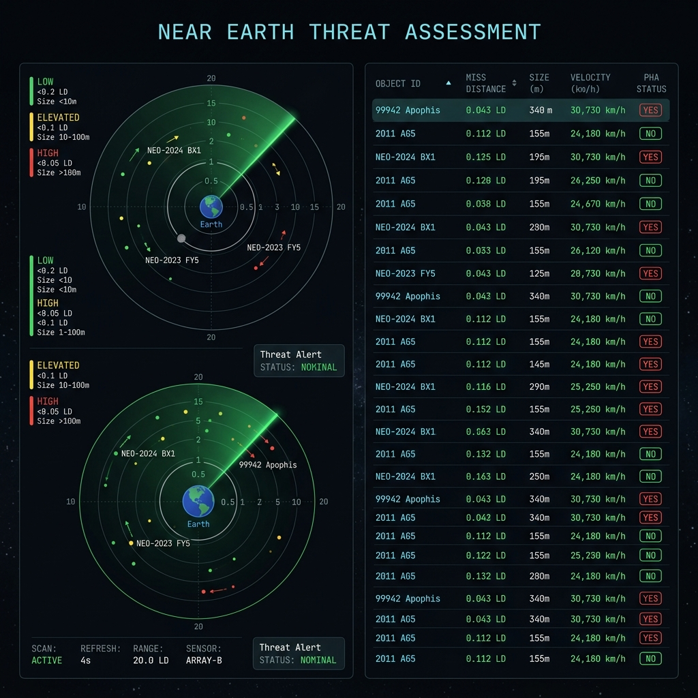
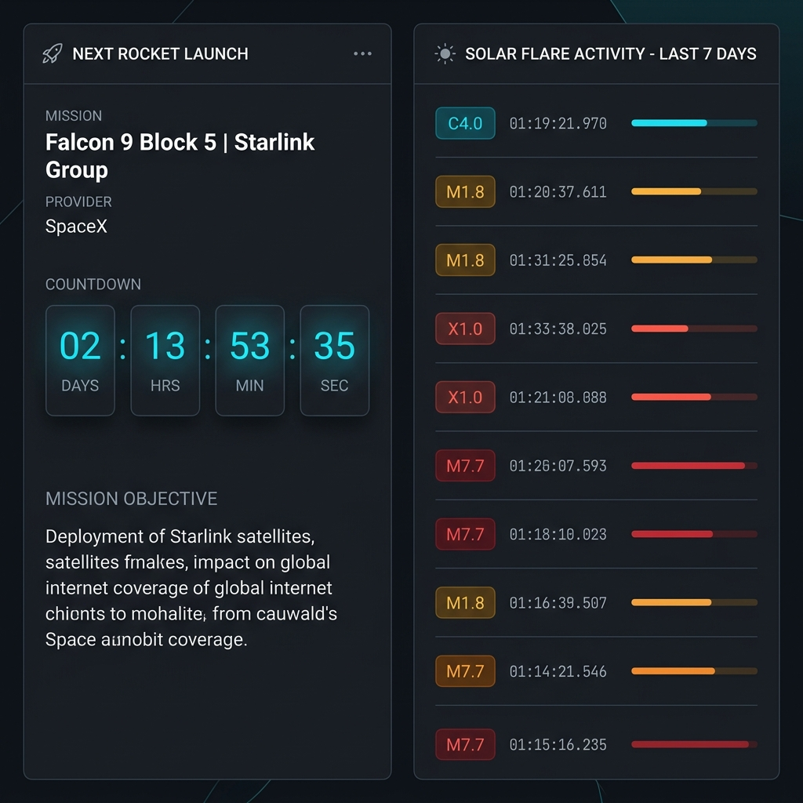

Autonomous Intelligence
Systems that independently observe, reason, and act on complex data streams — delivering insight without human bottlenecks.
Transforming complexity into clarity through autonomous intelligence systems that observe, analyze, and assist in understanding the world.
Systems that make sense of complex real-world information — autonomously, in real time, for humans.
Systems that independently observe, reason, and act on complex data streams — delivering insight without human bottlenecks.
Live data ingestion and processing pipelines that surface critical signals the moment they emerge, at any scale.
Intelligence surfaces that translate raw data into actionable understanding — designed for analysts and decision-makers.
Purpose-built intelligence platforms for complex domains. Starting with Earth situational awareness.
AI-powered Earth situational awareness platform. Real-time tracking of near-Earth objects, ISS telemetry, launch operations, and solar activity — unified in a single intelligent interface.
We are actively building new autonomous intelligence systems across multiple domains. Future products will be announced here.
At Xenolyth, we believe that intelligence is not just about data — it's about understanding. Our research centres on building systems that don't merely process information, but develop meaningful awareness of complex, dynamic environments.
We operate at the intersection of autonomous systems, real-time intelligence, and human-centred design. Every system we build is grounded in a commitment to clarity, precision, and purposeful operation.
Building agents that independently observe, reason, and act within complex, dynamic environments without constant human direction.
Designing pipelines that transform high-velocity data streams into actionable signals at the moment they become meaningful.
Leveraging machine intelligence to surface patterns and anomalies that exceed human analytical capacity alone.
Ensuring every interface amplifies human judgment rather than replacing it — clarity, precision, and purposeful interaction.
Xenolyth works with individuals and institutions who believe in the transformative potential of intelligent systems.
Access tools designed for deep, rigorous exploration of complex data environments.
Build with intelligent infrastructure and contribute to the expanding intelligence ecosystem.
Partner on research initiatives and gain early access to emerging intelligent platforms.
Deploy autonomous intelligence systems tailored to your operational domain and scale.
Xenolyth is an independent technology initiative focused on building autonomous intelligence systems that transform how humans understand complex real-world information.
We design for domains where clarity is critical — where the right intelligence, delivered at the right moment, changes what's possible.
Whether you're interested in Sentinel, a collaboration, or simply curious about what we're building.
Questions about Xenolyth, our mission, or what we're building next.
nxenolyth26@gmail.com →Apply for early access to Sentinel and future Xenolyth intelligent systems.
Apply for Beta →Research collaborations, institutional access, and future strategic relationships.
nxenolyth26@gmail.com →AI-powered Earth situational awareness. Real-time intelligence across near-Earth objects, ISS operations, rocket launches, and solar activity — unified and analysed autonomously.
Sentinel is Xenolyth's flagship autonomous intelligence platform, purpose-built for Earth situational awareness. It ingests live data from NASA, space agencies, and multiple real-time APIs — processing, analysing, and presenting a unified operational picture of Earth's near-space environment.
Sentinel is currently in private beta. Access is granted exclusively through Xenolyth's application review process. The platform is designed for analysts, researchers, and operators who require reliable, real-time space intelligence.
Real-time International Space Station telemetry including position, velocity, orbital path, and crew operations status.
Active monitoring of asteroids approaching Earth, with proximity radar, threat assessment, and detailed orbital data.
Global rocket launch tracking with live countdowns, mission briefings, AI-generated trajectory analysis, and orbital destination data.
Live solar flare classification, intensity tracking, and 7-day solar activity history with geomagnetic impact assessment.
Daily curated NASA imagery integrated with AI-generated mission briefs and weekly intelligence summary reports.
Daily and weekly AI-generated intelligence summaries synthesising all data streams into clear, actionable situational awareness.
Sentinel pulls from multiple live APIs to maintain continuous, accurate situational awareness around the clock.
Sentinel operates continuously, ingesting and analysing data from Earth's near-space environment to provide a complete, real-time operational picture.
Pulls live telemetry from NASA, ESA, and global space agencies — updated every few minutes.
Automatically classifies near-Earth objects by risk level, size, velocity, and approach trajectory.
Synthesises all active data streams into daily and weekly natural-language intelligence reports.
Real-time radar displays, orbit maps, solar charts, and proximity visualisations for operator clarity.
Custom object tracking with persistent alerts for mission-critical events and anomalies.
A glimpse at Sentinel's intelligence interface — designed for clarity at mission-critical moments.



Apply for early access. Create a Xenolyth account and submit your request. All applications are reviewed personally.
Our work is guided by a philosophy of rigorous, principled inquiry into intelligent systems and their role in human understanding.
We believe that truly intelligent systems don't merely process data — they develop meaningful awareness of the environments they inhabit. Xenolyth's research is driven by a single conviction: complex information can always be made clear.
Our approach combines rigorous systems design with a deep commitment to human-centred outcomes. Every model, pipeline, and interface we build is evaluated not by its technical sophistication alone, but by how clearly it illuminates the world for the people who depend on it.
We work at the frontier of autonomous intelligence — where the questions are hard, the data is noisy, and the stakes for understanding are real.
We study how intelligent agents can observe, reason, and operate within complex, dynamic environments — without constant human intervention. Our focus is on reliability, explainability, and operational precision.
High-velocity data demands high-velocity understanding. We research architectures and algorithms that process, classify, and surface critical signals from live data streams at the moment they become actionable.
How can machine intelligence extend — not replace — human analytical capacity? We explore AI systems that surface meaningful patterns and anomalies, augmenting expert judgment across complex domains.
The most powerful intelligence system amplifies the humans who use it. We study interface design, information hierarchy, and cognitive ergonomics to ensure our systems support clear, confident decision-making.
An independent technology initiative building the next generation of autonomous intelligence systems.
Xenolyth is an independent technology initiative focused on building autonomous intelligence systems that transform how humans understand and interact with complex real-world information.
We operate without the constraints of traditional institutions — moving quickly, thinking deeply, and building with purpose. Our commitment to craft is absolute.
We believe that the most important technology of the next decade will not simply automate existing workflows — it will reveal entirely new ways of understanding the world. Xenolyth exists to build those systems.
Transforming complexity into clarity through autonomous intelligence. We build systems that observe, analyse, and assist people in understanding complex real-world information — making the difficult legible and the invisible visible.
Create intelligent systems that observe, analyse, and assist people in understanding complex real-world information. We envision a future where intelligent systems act as a trusted extension of human analytical capacity — across every domain that matters.
We measure success by how well our systems make the complex understandable — not by how sophisticated the underlying technology is.
Every system we build must serve a real need in the world. We don't build for its own sake — we build because something important needs to exist.
Autonomous intelligence should amplify human judgment, not circumvent it. Our systems support informed, confident human decision-making.
How a thing is built matters as much as what it does. Precision, reliability, and design quality are non-negotiable at Xenolyth.
Whether you're interested in Sentinel, exploring a partnership, or simply curious about what Xenolyth is building — we'd love to hear from you.
Questions about Xenolyth, our technology, or our approach to autonomous intelligence. We read everything.
nxenolyth26@gmail.com →Apply for early access to Sentinel and future Xenolyth platforms. Submit your application for review.
Apply for Beta →Research collaborations, institutional access, university partnerships, and future strategic relationships.
nxenolyth26@gmail.com →Apply for early access to Sentinel. All applications are reviewed personally by Xenolyth. Selected participants are contacted with onboarding information.
Your beta request has been received. Xenolyth reviews all applications personally. If selected, you will be contacted with onboarding information. Thank you for your interest in Sentinel.